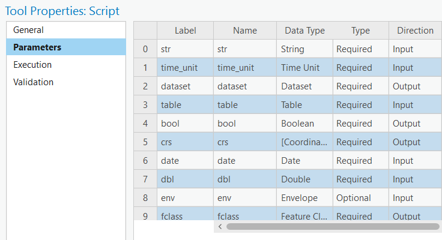
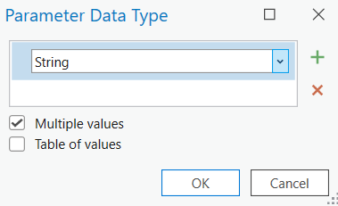
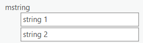

Geoprocessing Tools
Overview
Much like a python geoprocessing (GP) script tool, R based script tools can be created allowing you to create GP tools and toolboxes that utilize the power of R. The basic anatomy of an R script GP tool is like so:
my-geoprocessing-tool.R
- 1
- Two arguments capture input and output parameters
- 2
- Output parameters are returned to be captured by Pro
GP R script tools are defined in a standalone R script. The GP tool is defined by a function called tool_exec(). tool_exec() take two and only two arguments capturing input and output parameters. tool_exec() should always return the output parameter argument.
Input and Output Parameters
Additionally, there must be two arguments that correspond to input parameters and output parameters. The conventional name of these arguments are in_params and out_params. The first argument will always refer to the input parameters and the second to the outputs.
in_params and out_params are named lists. The elements of these lists are determined by the direction of a parameter.

If the direction is Input it will be contained in in_params. Likewise, if the direction is Output, it will be contained in out_params.
Using parameters
We can extract values from the in_params and out_params lists by the name of the parameter.
The name of the parameter must match that of the Name column in the Parameters option of the Tool Properties. It is not the Label column.
For example, if we wanted to parse the date parameter we could write our function like so:
tool_exec <- function(in_params, out_params) {
# fetch the date parameter
date_str <- in_params[["date"]]
# parse it using {anytime}
clean_date <- anytime::anytime(date_str)
# ... do additional things
# return values to ArcGIS Pro
out_params
}Returning values to ArcGIS Pro
You may have noticed that at the end of the tool_exec() function we are returning the out_params object. If we do not return the output parameters back to Pro—by returning out_params—the outputs cannot be captured and used by Pro.
Notably, the output parameters are useful in linking one tool to another, for example via use in ModelBuilder or in an arcpy script.
Parameter types
There are number of different type of parameters that can be provided to a geoprocessing (GP) tool. The type of parameter that is chosen determines how that parameter will appear in the GP pane’s UI. Each parameter type can be represented by a basic scalar R type: integer, double, character, logical, or NULL.
A scalar value is a vector with only a single element.
It is incumbent upon you to take these parameter inputs and use them appropriately in R. Not every type of parameter can be processed correctly by arcgisbinding. Below are some of the most common parameter types and how they are handled by arcgisbinding. This is not a complete enumeration by any means!
| Parameter Data Type | R type |
|---|---|
| String | character |
| Boolean | logical |
| Double | numeric |
| Date | character in the format of your system e.g. "11/17/2023 4:35:57 PM" |
| Field | character the field name of a feature class |
| Folder | character absolute path e.g. "C:\\Users\username\Documents" |
| Feature Class | characterabsolute path e.g. "C:\\Users\username\mydatabase.gdb\\feature_class |
| Spatial Reference | character a string representation of the spatial reference e.g. "PROJCS["...."]" |
Multiple Values
When selecting the Multiple values check box in the parameter data type UI, users can then provide multiple inputs of that type.

When this is done, each of the input values will be contained inside of a list. If you have multiple values ticked for the String type, you will get a list of scalar character vectors.
This is important so it bears repeating! When users provide multiple values they will be captured in R as a list of scalars. Meaning that if you have multiple String values you will not get a character vector with a length greater than one.
Take the below input for example

In R we would get the list("string 1", "string 2") and not c("string 1", "string 2").
To turn a list of scalars of the same type—e.g. double, integer, logical, or character—into a vector you can use unlist(). For example unlist(list("string 1", "string 2")) will give us c("string 1", "string 2").
Common Patterns
Reading a Feature Class
Often we you will want to read a feature class using arcgisbinding and bring the results into R as an sf object. To do his we will use the functions arc.open(), arc.select(), and arc.data2sf().
tool_exec <- function(in_params, out_params) {
fclass <- arcgisbinding::arc.open(in_params[["fc_path"]])
fclass_selected <- arcgisbinding::arc.select(
fclass,
# fields = c("optional", "fields", "to", "read"),
# where_clause = "optional sql where clause to filter"
)
fclass_sf <- arcgisbinding::arc.data2sf(fclass_selected)
}If you are going to filter or select columns from your dataset consider doing that with the fields and where_clause arguments of arc.select() to reduce the amount of data read into memory.
arc.select() returns a data.frame with fields and a special geometry column which is incompatible with sf. We use arc.data2sf() to convert it to an sf object.
Writing a Feature Class
It is quite common to write the results of an analysis to a file geodatabase. This can be done with arc.write(). Typically, the we will capture the output path to write to in the out_params list object as a Feature Class type parameter.
arc.write() requires two arguments. The first is the output path to write to and the second is the object to write. The accepted type of objects are data.frame, sf, RasterLayer or RasterBrick.
As of Nov 2023 {terra} is not supported but we are actively working on this.
tool_exec <- function(in_params, out_params) {
# extract the path to write to
out_fp <- out_params[["output_fclass"]]
# write the `sf_object` to a geodatabase
arcgisbinding::arc.write(out_fp, sf_object)
}Installing Required Packages
When you share your R based GP tools with other users there is a good chance that they do not have the packages that your script tool needs to execute code. In this case, we should install the required packages the first time the script tool is executed.
In our script tool we should check to see if the required package is installed and if not, install it. We can write a helper function to include at the top of our script if we have multiple packages to check.
install_if_not <- function(pkg) {
if (!requireNamespace(pkg)) {
message("Installing required package `{", pkg, "}`")
install.packages(pkg)
}
}This function uses requireNamespace() which attempts to load the provided package. If it succeeds, it returns TRUE, if not it returns FALSE. We check to see if it returns FALSE and if so, we install the package and print an informative message.
For example if we need to use the package {spdep} and its not installed it will print the message and install it.
tool_exec <- function(in_params, out_params) {
# check for required paackages
install_if_not("spdep")
# do other thigns with spdep
# ...
}Using Progressors
Geoprocessing tools have a progressor, which includes both a progress label and a progress bar. The default progressor continuously moves back and forth to indicate the script is running. Using arc.progress_label() and arc.progress_pos() allows fine control over the script progress. Updating the progressor isn’t necessary, but is useful in situations where solely outputting messages to the dialog is insufficient to communicate script progress.


Read more in the Understanding the progressor in script tools article.
Using arc.progress_label() allows control over the label that is displayed at the top of the running script. For example, it might be used to display the current step of the analysis taking place. Using arc.progress_pos() allows control over the progressor position displayed at the top of the running script. The position is an integer percentage, 0 to 100, that the progress bar should be set to, with 100 indicating the script has completed (100%).
library(arcgisbinding)
tool_exec <- function(in_params, out_params) {
# read feature class
arc.progress_label("Reading Feature Class")
fclass <- arc.open(in_params[["input_fclass"]])
# convert to sf
arc.progress_label("Converting Feature Class to sf")
sf_obj <- arc.data2sf(arc.select(fclass))
# do other things
arc.progress_label("Doing other computations")
return(out_params)
}Using R script tools with arcpy
Dependent Parameters
- Autopopulate field drop-down using dependent parameter